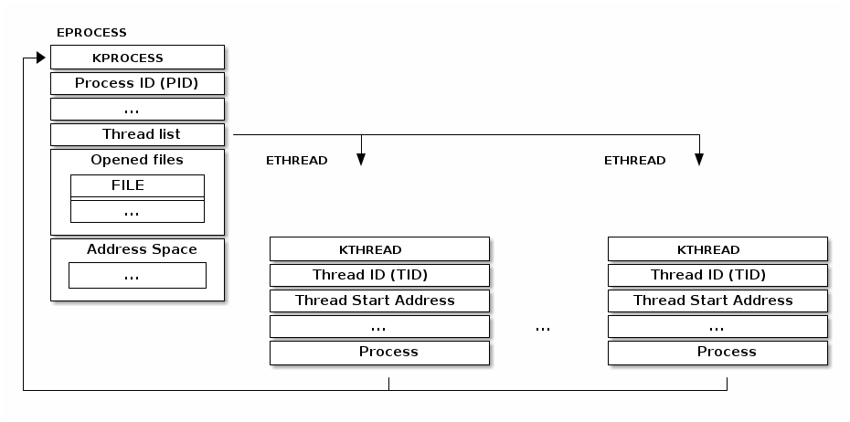
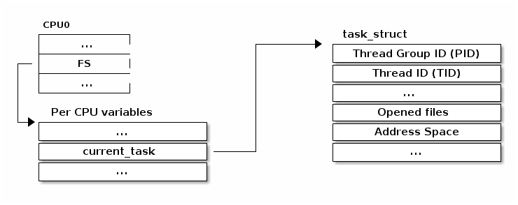
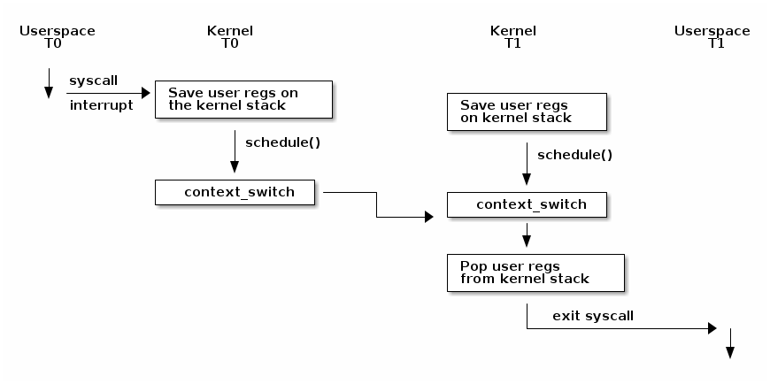
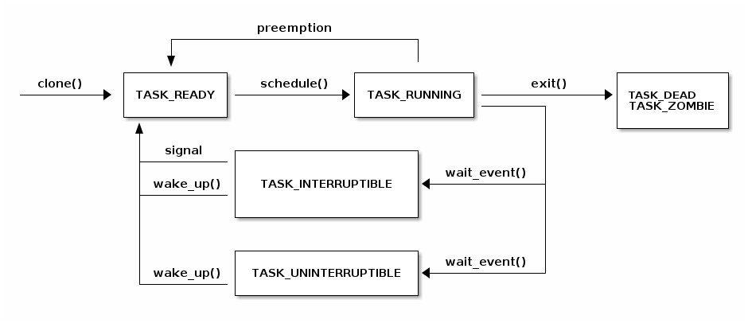

SO2 课程 03——进程¶
课程目标¶
- 进程和线程
- 上下文切换
- 阻塞和唤醒
- 进程上下文
进程和线程¶
进程是操作系统的抽象概念，用于组织多个资源：
|
|
所有这些信息都被组织在进程控制块（PCB）中。在 Linux 中，PCB 对应的结构体是 struct task_struct。
进程资源概述¶
我们可以在 /proc/<pid> 目录中获取关于进程资源的摘要信息，其中 <pid> 是我们要查看的进程的进程 ID。
+-------------------------------------------------------------------+
| dr-x------ 2 tavi tavi 0 2021 03 14 12:34 . |
| dr-xr-xr-x 6 tavi tavi 0 2021 03 14 12:34 .. |
| lrwx------ 1 tavi tavi 64 2021 03 14 12:34 0 -> /dev/pts/4 |
+--->| lrwx------ 1 tavi tavi 64 2021 03 14 12:34 1 -> /dev/pts/4 |
| | lrwx------ 1 tavi tavi 64 2021 03 14 12:34 2 -> /dev/pts/4 |
| | lr-x------ 1 tavi tavi 64 2021 03 14 12:34 3 -> /proc/18312/fd |
| +-------------------------------------------------------------------+
| +----------------------------------------------------------------+
| | 08048000-0804c000 r-xp 00000000 08:02 16875609 /bin/cat |
$ ls -1 /proc/self/ | 0804c000-0804d000 rw-p 00003000 08:02 16875609 /bin/cat |
cmdline | | 0804d000-0806e000 rw-p 0804d000 00:00 0 [heap] |
cwd | | ... |
environ | +----------->| b7f46000-b7f49000 rw-p b7f46000 00:00 0 |
exe | | | b7f59000-b7f5b000 rw-p b7f59000 00:00 0 |
fd --------+ | | b7f5b000-b7f77000 r-xp 00000000 08:02 11601524 /lib/ld-2.7.so |
fdinfo | | b7f77000-b7f79000 rw-p 0001b000 08:02 11601524 /lib/ld-2.7.so |
maps -----------+ | bfa05000-bfa1a000 rw-p bffeb000 00:00 0 [stack] |
mem | ffffe000-fffff000 r-xp 00000000 00:00 0 [vdso] |
root +----------------------------------------------------------------+
stat +----------------------------+
statm | Name: cat |
status ------+ | State: R (running) |
task | | Tgid: 18205 |
wchan +------>| Pid: 18205 |
| PPid: 18133 |
| Uid: 1000 1000 1000 1000 |
| Gid: 1000 1000 1000 1000 |
+----------------------------+
struct task_struct¶
让我们仔细分析 struct task_struct。为此，我们可以查看源代码，但在这里我们将使用一个名为 pahole 的工具（它是 dwarves 安装包的一部分），来获取有关这个结构的一些见解：
$ pahole -C task_struct vmlinux
struct task_struct {
struct thread_info thread_info; /* 0 8 */
volatile long int state; /* 8 4 */
void * stack; /* 12 4 */
...
/* --- cacheline 45 boundary (2880 bytes) --- */
struct thread_struct thread __attribute__((__aligned__(64))); /* 2880 4288 */
/* size: 7168, cachelines: 112, members: 155 */
/* sum members: 7148, holes: 2, sum holes: 12 */
/* sum bitfield members: 7 bits, bit holes: 2, sum bit holes: 57 bits */
/* paddings: 1, sum paddings: 2 */
/* forced alignments: 6, forced holes: 2, sum forced holes: 12 */
} __attribute__((__aligned__(64)));
可以看出，这是一个相当大的数据结构：大小接近 8KB，具有 155 个字段（field）。
检查 task_struct¶
以下屏幕录像（screencast）将演示如何通过连接调试器到正在运行的虚拟机来检查进程控制块（struct task_struct）。我们将使用辅助的 gdb 命令 lx-ps 来列出进程以及每个进程的 task_struct 地址。
测验：查看任务以确定打开的文件¶
使用调试器来检查名为 syslogd 的进程。
- 我们应该使用什么命令列出已打开的文件描述符？
- 有多少个文件描述符已打开？
- 我们应该使用什么命令来确定打开文件描述符 3 的文件名？
- 文件描述符 3 的文件名是什么？
线程¶
线程是内核进程调度器允许应用程序在 CPU 上运行的基本单位。线程具有以下特点：
- 每个线程都拥有独立的堆栈，这个堆栈与线程的寄存器的值共同决定了线程的运行状态
- 线程在进程的上下文中运行，同一进程中的所有线程共享资源
- 内核调度的是线程而不是进程，用户级线程（例如纤程（fiber）、协程（coroutine）等）在内核级别不可见
典型的线程实现是将线程实现为单独的数据结构，然后将其链接到进程数据结构。例如，Windows 内核就使用了这样的实现方式：

Linux 采用了不同的线程实现方式。其基本单位被称为“任务”（task）（因此其结构类型名为 struct task_struct ），它既可以用于任务也可以用于进程。与将资源直接嵌入到任务结构体中的典型实现不同，它包含了指向这些资源的指针。
因此，如果两个线程属于同一个进程，它们将指向相同的资源结构体实例。如果两个线程属于不同进程，它们将指向不同的资源结构体实例。

克隆系统调用¶
在 Linux 中，使用 clone() 系统调用可以创建新的线程或进程。无论是 fork() 系统调用，还是 pthread_create() 函数都使用了 clone() 系统调用来实现。
它允许调用者决定与父进程共享哪些资源，以及哪些资源应该被复制或隔离：
- CLONE_FILES——与父进程共享文件描述符表
- CLONE_VM——与父进程共享地址空间
- CLONE_FS——与父进程共享文件系统信息（根目录，当前目录）
- CLONE_NEWNS——不与父进程共享挂载命名空间（mount namespace）
- CLONE_NEWIPC——不与父进程共享 IPC 命名空间（System V IPC 对象，POSIX 消息队列）
- CLONE_NEWNET——不与父进程共享网络命名空间（网络接口，路由表）
例如，如果调用者使用了 CLONE_FILES | CLONE_VM | CLONE_FS，则实际上创建了一个新的线程。如果未使用这些标志，则创建了一个新的进程。
命名空间和“容器”¶
“容器”是一种轻量级虚拟机，它们共享相同的内核实例。这与正常的虚拟化相反，在正常的虚拟化中，一个虚拟机监视程序（hypervisor）运行多个虚拟机，每个虚拟机都有自己的内核实例。
容器技术的例子包括 LXC（允许运行轻量级的“虚拟机”）和 Docker（一种专门用于运行单个应用程序的容器）。
容器是建立在一些内核特性之上的，其中之一就是命名空间（namespace）。内核空间技术允许隔离不同的资源，如果不隔离的话这些资源将在全局可见。例如，如果没有容器，所有进程都将在 /proc 中可见。有了容器后，一个容器中的进程对其他容器来说是不可见的（在 /proc 中不可见，也不能被终止）。
为了实现这种分区，容器技术使用了 struct nsproxy 结构来分组我们想要分区的资源类型。它目前支持 IPC、网络、cgroup、挂载、PID、时间命名空间。例如，我们不再使用全局的网络接口列表，而是选择将网络接口列表作为 struct net 结构的一部分。在系统初始化时，会创建一个默认的命名空间，名为 init_net。默认情况下，所有的进程都会共享这个命名空间。但是，当我们创建一个新的命名空间时，系统会相应地创建一个新的网络命名空间。这样，新的进程就可以选择指向这个新创建的命名空间，而不是默认的命名空间。
访问当前进程¶
访问当前进程是一个频繁的操作：
- 打开文件需要访问
struct task_struct的 file 字段 - 映射新文件需要访问
struct task_struct的 mm 字段 - 超过 90% 的系统调用需要访问当前进程结构体，因此访问需要很快
current宏可用于访问当前进程的struct task_struct
为了在多处理器配置中实现快速访问，每个 CPU 中都有一个共同的变量，这个变量可用来存储和检索指向当前 struct task_struct 的指针：

以前，current 宏使用以下序列实现：
/* 如何用 C 语言获取当前堆栈指针 */
register unsigned long current_stack_pointer asm("esp") __attribute_used__;
/* 如何用 C 语言获取线程信息结构体 */
static inline struct thread_info *current_thread_info(void)
{
return (struct thread_info *)(current_stack_pointer & ~(THREAD_SIZE – 1));
}
#define current current_thread_info()->task
上下文切换¶
以下图表展示了 Linux 内核上下文切换过程的概述：
请注意，在发生上下文切换之前，我们必须进行内核转换，这可以通过系统调用或中断来实现。此时，用户空间的寄存器会保存在内核堆栈上。在某个时刻，可能会调用 schedule() 函数，该函数决定从线程 T0 切换到线程 T1（例如，因为当前线程正在阻塞等待 I/O 操作完成，或者因为它的时间片已经耗尽）。
此时，context_switch() 函数将执行特定于体系结构的操作，并在需要时切换地址空间：
static __always_inline struct rq *
context_switch(struct rq *rq, struct task_struct *prev,
struct task_struct *next, struct rq_flags *rf)
{
prepare_task_switch(rq, prev, next);
/*
* paravirt 中，这与 switch_to 中的 exit 配对，
* 将页表重载和后端切换合并为一个超级调用（hypercall）。
*/
arch_start_context_switch(prev);
/*
* kernel -> kernel lazy + transfer active
* user -> kernel lazy + mmgrab() active
*
* kernel -> user switch + mmdrop() active
* user -> user switch
*/
if (!next->mm) { // 到内核
enter_lazy_tlb(prev->active_mm, next);
next->active_mm = prev->active_mm;
if (prev->mm) // 来自用户
mmgrab(prev->active_mm);
else
prev->active_mm = NULL;
} else { // 到用户
membarrier_switch_mm(rq, prev->active_mm, next->mm);
/*
* sys_membarrier() 在设置 rq->curr / membarrier_switch_mm() 和返回用户空间之间需要一个 smp_mb()。
*
* 下面通过 switch_mm() 或者在 'prev->active_mm == next->mm' 的情况下通过 finish_task_switch() 的 mmdrop() 来提供这个功能。
*/
switch_mm_irqs_off(prev->active_mm, next->mm, next);
if (!prev->mm) { // 来自内核
/* 在 finish_task_switch() 中进行 mmdrop()。 */
rq->prev_mm = prev->active_mm;
prev->active_mm = NULL;
}
}
rq->clock_update_flags &= ~(RQCF_ACT_SKIP|RQCF_REQ_SKIP);
prepare_lock_switch(rq, next, rf);
/* 在这里我们只切换寄存器状态和堆栈。 */
switch_to(prev, next, prev);
barrier();
return finish_task_switch(prev);
}
它将调用特定于架构的 switch_to 宏实现来切换寄存器状态和内核堆栈。请注意，寄存器被保存在堆栈上，并且堆栈指针被保存在任务结构体中：
#define switch_to(prev, next, last) \
do { \
((last) = __switch_to_asm((prev), (next))); \
} while (0)
/*
* %eax: prev task
* %edx: next task
*/
.pushsection .text, "ax"
SYM_CODE_START(__switch_to_asm)
/*
* 保存被调用者保存的寄存器
* 其必须与 struct inactive_task_frame 中的顺序匹配
*/
pushl %ebp
pushl %ebx
pushl %edi
pushl %esi
/*
* 保存标志位以防止 AC 泄漏。如果 objtool 支持 32 位，则可以消除此项需求，以验证 STAC/CLAC 的正确性。
*/
pushfl
/* 切换堆栈 */
movl %esp, TASK_threadsp(%eax)
movl TASK_threadsp(%edx), %esp
#ifdef CONFIG_STACKPROTECTOR
movl TASK_stack_canary(%edx), %ebx
movl %ebx, PER_CPU_VAR(stack_canary)+stack_canary_offset
#endif
#ifdef CONFIG_RETPOLINE
/*
* 当从较浅的调用堆栈切换到较深的堆栈时，RSB 可能会下溢或使用填充有用户空间地址的条目。
* 在存在这些问题的 CPU 上，用捕获推测执行的条目覆盖 RSB，以防止攻击。
*/
FILL_RETURN_BUFFER %ebx, RSB_CLEAR_LOOPS, X86_FEATURE_RSB_CTXSW
#endif
/* 恢复任务的标志位以恢复 AC 状态。 */
popfl
/* 恢复被调用者保存的寄存器 */
popl %esi
popl %edi
popl %ebx
popl %ebp
jmp __switch_to
SYM_CODE_END(__switch_to_asm)
.popsection
可以注意到指令指针并没有显式保存。这是因为：
- 任务将始终在此函数中恢复执行
schedule`（:c:func:`context_switch()总是被内联）调用者的返回地址保存在内核堆栈上- 使用 jmp 执行
__switch_to()，它是一个函数，当函数返回时，它将从堆栈中弹出原始的（下一个任务的）返回地址
以下屏幕录像使用调试器在 __switch_to_asm 中设置断点，并在上下文切换期间检查堆栈：
测验：上下文切换¶
假设我们正在执行上下文切换，请选择所有正确的陈述。
- ESP 寄存器被保存在 task 结构中
- EIP 寄存器被保存在 task 结构中
- 通用寄存器被保存在 task 结构中
- ESP 寄存器被保存在堆栈中
- EIP 寄存器被保存在堆栈中
- 通用寄存器被保存在堆栈中
阻塞和唤醒任务¶
任务状态¶
以下图表显示了任务（线程）的状态及其之间可能的转换：
阻塞当前线程¶
阻塞当前线程是一项重要的操作，我们需要执行它来实现高效的任务调度——我们希望在 I/O 操作完成时运行其他线程。
为了实现这一目标，需要执行以下操作：
- 将当前线程状态设置为 TASK_UINTERRUPTIBLE 或 TASK_INTERRUPTIBLE
- 将任务添加到等待队列中
- 调用调度程序，从 READY 队列中选择一个新任务
- 进行上下文切换到新任务
以下是对 wait_event 的实现的一些代码片段。请注意，等待队列是一个带有额外信息（如指向任务结构体的指针）的列表。
还请注意，为了确保在 wait_event 和 wake_up 之间不会发生死锁，任务会在检查 condition 之前被添加到列表中，并且调用 schedule() 之前会进行信号（signal）检查。
/**
* wait_event——在条件为真之前一直保持睡眠状态
* @wq_head: 等待队列
* @condition: 用于等待的事件的 C 表达式
*
* 进程会进入睡眠状态（TASK_UNINTERRUPTIBLE），直到 @condition 为真为止。
* 每次唤醒等待队列 @wq_head 时，都会检查 @condition。
*
* 在更改任何可能改变等待条件结果的变量后，必须调用 wake_up()。
*/
#define wait_event(wq_head, condition) \
do { \
might_sleep(); \
if (condition) \
break; \
__wait_event(wq_head, condition); \
} while (0)
#define __wait_event(wq_head, condition) \
(void)___wait_event(wq_head, condition, TASK_UNINTERRUPTIBLE, 0, 0, \
schedule())
/*
* 下面的宏 ___wait_event() 在 wait_event_*() 宏中使用时，有一个显式的 __ret
* 变量的影子。
*
* 这是为了两者都可以使用 ___wait_cond_timeout() 结构来包装条件。
*
* wait_event_*() 中 __ret 变量的类型不一致也是有意而为的；我们在可以返回超时值的情况下使用 long，否则使用 int。
*/
#define ___wait_event(wq_head, condition, state, exclusive, ret, cmd) \
({ \
__label__ __out; \
struct wait_queue_entry __wq_entry; \
long __ret = ret; /* 显式影子变量 */ \
\
init_wait_entry(&__wq_entry, exclusive ? WQ_FLAG_EXCLUSIVE : 0); \
for (;;) { \
long __int = prepare_to_wait_event(&wq_head, &__wq_entry, state);\
\
if (condition) \
break; \
\
if (___wait_is_interruptible(state) && __int) { \
__ret = __int; \
goto __out; \
} \
\
cmd; \
} \
finish_wait(&wq_head, &__wq_entry); \
__out: __ret; \
})
void init_wait_entry(struct wait_queue_entry *wq_entry, int flags)
{
wq_entry->flags = flags;
wq_entry->private = current;
wq_entry->func = autoremove_wake_function;
INIT_LIST_HEAD(&wq_entry->entry);
}
long prepare_to_wait_event(struct wait_queue_head *wq_head, struct wait_queue_entry *wq_entry, int state)
{
unsigned long flags;
long ret = 0;
spin_lock_irqsave(&wq_head->lock, flags);
if (signal_pending_state(state, current)) {
/*
* 如果被唤醒选择的是独占等待者，那么它不能失败，
* 它应该“消耗”我们等待的条件。
*
* 调用者将重新检查条件，并在我们已被唤醒时返回成功，我们不能错过事件，因为唤醒会锁定/解锁相同的 wq_head->lock。
*
* 但是我们需要确保在设置条件后+之后的唤醒看不到我们，如果我们失败的话，它应该唤醒另一个独占等待者。
*/
list_del_init(&wq_entry->entry);
ret = -ERESTARTSYS;
} else {
if (list_empty(&wq_entry->entry)) {
if (wq_entry->flags & WQ_FLAG_EXCLUSIVE)
__add_wait_queue_entry_tail(wq_head, wq_entry);
else
__add_wait_queue(wq_head, wq_entry);
}
set_current_state(state);
}
spin_unlock_irqrestore(&wq_head->lock, flags);
return ret;
}
static inline void __add_wait_queue(struct wait_queue_head *wq_head, struct wait_queue_entry *wq_entry)
{
list_add(&wq_entry->entry, &wq_head->head);
}
static inline void __add_wait_queue_entry_tail(struct wait_queue_head *wq_head, struct wait_queue_entry *wq_entry)
{
list_add_tail(&wq_entry->entry, &wq_head->head);
}
/**
* finish_wait - 在队列中等待后进行清理
* @wq_head: 等待的等待队列头
* @wq_entry: 等待描述符
*
* 将当前线程设置回运行状态，并从给定的等待队列中移除等待描述符（如果仍在队列中）。
*/
void finish_wait(struct wait_queue_head *wq_head, struct wait_queue_entry *wq_entry)
{
unsigned long flags;
__set_current_state(TASK_RUNNING);
/*
* 我们可以在锁之外检查链表是否为空，前提是：
* - 我们使用了“careful”检查，验证了 next 和 prev 指针，以确保没有我们还没有看到的其他 CPU 上可能仍在进行的半完成更新（可能仍会更改堆栈区域）。
* 并且
* - 所有其他用户都会获取锁（也就是说，只有一个其他 CPU 可以查看或修改链表）。
*/
if (!list_empty_careful(&wq_entry->entry)) {
spin_lock_irqsave(&wq_head->lock, flags);
list_del_init(&wq_entry->entry);
spin_unlock_irqrestore(&wq_head->lock, flags);
}
}
唤醒任务¶
我们可以使用 wake_up 原语来唤醒任务。唤醒任务需要执行以下高级操作：
- 从等待队列中选择一个任务
- 将任务状态设置为 TASK_READY
- 将任务插入调度器的 READY 队列中
- 在 SMP 系统上，这是一个复杂的操作：每个处理器都有自己的队列，队列需要平衡，需要向 CPU 发送信号
#define wake_up(x) __wake_up(x, TASK_NORMAL, 1, NULL)
/**
* __wake_up - 唤醒在等待队列上阻塞的线程。
* @wq_head: 等待队列
* @mode: 哪些线程
* @nr_exclusive: 要唤醒的线程数（一次唤醒一个或一次唤醒多个）
* @key: 直接传递给唤醒函数
*
* 如果此函数唤醒了一个任务，则在访问任务状态之前执行完全的内存屏障。
*/
void __wake_up(struct wait_queue_head *wq_head, unsigned int mode,
int nr_exclusive, void *key) {
__wake_up_common_lock(wq_head, mode, nr_exclusive, 0, key);
}
static void __wake_up_common_lock(struct wait_queue_head *wq_head, unsigned int mode,
int nr_exclusive, int wake_flags, void *key) {
unsigned long flags;
wait_queue_entry_t bookmark;
bookmark.flags = 0;
bookmark.private = NULL;
bookmark.func = NULL;
INIT_LIST_HEAD(&bookmark.entry);
do {
spin_lock_irqsave(&wq_head->lock, flags);
nr_exclusive = __wake_up_common(wq_head, mode, nr_exclusive,
wake_flags, key, &bookmark);
spin_unlock_irqrestore(&wq_head->lock, flags);
} while (bookmark.flags & WQ_FLAG_BOOKMARK);
}
/*
* 核心唤醒函数。非独占唤醒（nr_exclusive == 0）会唤醒所有任务。如果是独占唤醒（nr_exclusive == 一个小正数），则唤醒所有非独占任务和一个独占任务。
*
* 在某些情况下，我们可能会尝试唤醒已经开始运行但不处于 TASK_RUNNING 状态的任务。在这种（罕见）情况下，try_to_wake_up() 会返回零，我们通过继续扫描队列来处理它。
*/
static int __wake_up_common(struct wait_queue_head *wq_head, unsigned int mode,
int nr_exclusive, int wake_flags, void *key,
wait_queue_entry_t *bookmark) {
wait_queue_entry_t *curr, *next;
int cnt = 0;
lockdep_assert_held(&wq_head->lock);
if (bookmark && (bookmark->flags & WQ_FLAG_BOOKMARK)) {
curr = list_next_entry(bookmark, entry);
list_del(&bookmark->entry);
bookmark->flags = 0;
} else
curr = list_first_entry(&wq_head->head, wait_queue_entry_t, entry);
if (&curr->entry == &wq_head->head)
return nr_exclusive;
list_for_each_entry_safe_from(curr, next, &wq_head->head, entry) {
unsigned flags = curr->flags;
int ret;
if (flags & WQ_FLAG_BOOKMARK)
continue;
ret = curr->func(curr, mode, wake_flags, key);
if (ret < 0)
break;
if (ret && (flags & WQ_FLAG_EXCLUSIVE) && !--nr_exclusive)
break;
if (bookmark && (++cnt > WAITQUEUE_WALK_BREAK_CNT) &&
(&next->entry != &wq_head->head)) {
bookmark->flags = WQ_FLAG_BOOKMARK;
list_add_tail(&bookmark->entry, &next->entry);
break;
}
}
return nr_exclusive;
}
int autoremove_wake_function(struct wait_queue_entry *wq_entry, unsigned mode, int sync, void *key) {
int ret = default_wake_function(wq_entry, mode, sync, key);
if (ret)
list_del_init_careful(&wq_entry->entry);
return ret;
}
int default_wake_function(wait_queue_entry_t *curr, unsigned mode, int wake_flags,
void *key) {
WARN_ON_ONCE(IS_ENABLED(CONFIG_SCHED_DEBUG) && wake_flags & ~WF_SYNC);
return try_to_wake_up(curr->private, mode, wake_flags);
}
/**
* try_to_wake_up——唤醒线程
* @p: 要唤醒的线程
* @state: 可以被唤醒的任务状态的掩码
* @wake_flags: 唤醒修改标志 (WF_*)
*
* 概念上执行以下操作：
*
* 如果 (@state & @p->state)，则 @p->state = TASK_RUNNING。
*
* 如果任务没有放进队列/可运行，还将其放回运行队列。
*
* 此函数对 schedule() 是原子性的，后者会让该任务出列。
*
* 在访问 @p->state 之前，它会触发完整的内存屏障，请参阅 set_current_state() 的注释。
*
* 使用 p->pi_lock 来序列化与并发唤醒的操作。
*
* 依赖于 p->pi_lock 来稳定下来：
* - p->sched_class
* - p->cpus_ptr
* - p->sched_task_group
* 以便进行迁移，请参阅 select_task_rq()/set_task_cpu() 的使用。
*
* 尽力只获取一个 task_rq(p)->lock 以提高性能。
* 在以下情况下获取 rq->lock：
* - ttwu_runnable() -- 旧的 rq，不可避免的，参见该处的注释；
* - ttwu_queue() -- 新的 rq，用于任务入队；
* - psi_ttwu_dequeue() -- 非常遗憾 :-(，计数将会伤害我们。
*
* 因此，我们与几乎所有操作都存在竞争。有关详细信息，请参阅许多内存屏障及其注释。
*
* 返回值：如果 @p->state 改变（实际进行了唤醒），则为 %true，否则为 %false。
*/
static int
try_to_wake_up(struct task_struct *p, unsigned int state, int wake_flags)
{
...
任务抢占¶
到目前为止，我们已经讨论了线程之间如何自愿进行上下文切换。接下来，我们将讨论任务抢占的处理方式。我们将从内核配置为非抢占式的简单情况开始，然后再转向抢占式内核的情况。
非抢占式内核¶
- 每个时钟滴答，内核会检查当前进程是否已经用完了它的时间片
- 如果发生这种情况，会在中断上下文中设置一个标志位
- 在返回用户空间之前，内核会检查这个标志位，并在需要时调用
schedule()函数 - 在这种情况下，任务在内核模式下运行（例如系统调用）时不会被抢占，因此不存在同步问题
抢占式内核¶
在这种情况下，即使我们在内核模式下执行系统调用，当前任务也可以被抢占。这需要使用特殊的同步原语：preempt_disable 和 preempt_enable。
为了简化抢占式内核的处理，并且由于在 SMP （对称多处理） 情况下需要使用同步原语，当使用自旋锁时会自动禁用抢占。
与之前一样，如果我们遇到需要抢占当前任务的条件（例如时间片用完），会设置一个标志位。每当重新激活抢占时，例如通过 spin_unlock() 退出临界区时，会检查这个标志位，并在需要时调用调度器以选择一个新的任务。
进程上下文¶
在我们研究了进程和线程（任务）的实现、上下文切换的方式以及如何阻塞、唤醒和抢占任务之后，我们最终可以定义进程上下文及其属性：
当内核执行系统调用时，它处于进程上下文中。
在进程上下文中，存在一个明确定义的上下文，我们可以使用 current 来访问当前进程的数据。
在进程上下文中，我们可以睡眠（等待条件）。
在进程上下文中，我们可以访问用户空间（除非我们在内核线程上下文中运行）。
内核线程¶
有时候内核核心或设备驱动程序需要执行阻塞操作，因此需要在进程上下文中运行。
内核线程就是为此而使用的一种特殊类别的任务，它们不使用“用户空间”资源（例如没有地址空间或打开的文件）。
以下屏幕录像将更详细地介绍内核线程：
使用 gdb 脚本进行内核检查¶
Linux 内核附带了一组预定义的 gdb 扩展命令，我们可以在调试过程中使用它们来检查内核。只要正确设置了 gdbinit，它们就会自动加载。
ubuntu@so2:/linux/tools/labs$ cat ~/.gdbinit
add-auto-load-safe-path /linux/scripts/gdb/vmlinux-gdb.py
所有与内核相关的命令都以 lx- 为前缀。在 gdb 中可以使用 TAB 键列出所有这些命令：
(gdb) lx-
lx-clk-summary lx-dmesg lx-mounts
lx-cmdline lx-fdtdump lx-ps
lx-configdump lx-genpd-summary lx-symbols
lx-cpus lx-iomem lx-timerlist
lx-device-list-bus lx-ioports lx-version
lx-device-list-class lx-list-check
lx-device-list-tree lx-lsmod
这些命令的实现可以在 script/gdb/linux 目录中找到。让我们仔细看一下 lx-ps 命令的实现：
task_type = utils.CachedType("struct task_struct")
def task_lists():
task_ptr_type = task_type.get_type().pointer()
init_task = gdb.parse_and_eval("init_task").address
t = g = init_task
while True:
while True:
yield t
t = utils.container_of(t['thread_group']['next'],
task_ptr_type, "thread_group")
if t == g:
break
t = g = utils.container_of(g['tasks']['next'],
task_ptr_type, "tasks")
if t == init_task:
return
class LxPs(gdb.Command):
"""Dump Linux tasks."""
def __init__(self):
super(LxPs, self).__init__("lx-ps", gdb.COMMAND_DATA)
def invoke(self, arg, from_tty):
gdb.write("{:>10} {:>12} {:>7}\n".format("TASK", "PID", "COMM"))
for task in task_lists():
gdb.write("{} {:^5} {}\n".format(
task.format_string().split()[0],
task["pid"].format_string(),
task["comm"].string()))
测验：内核 gdb 脚本¶
下面对 lx-ps 脚本的修改是为了实现什么目的？
diff --git a/scripts/gdb/linux/tasks.py b/scripts/gdb/linux/tasks.py
index 17ec19e9b5bf..7e43c163832f 100644
--- a/scripts/gdb/linux/tasks.py
+++ b/scripts/gdb/linux/tasks.py
@@ -75,10 +75,13 @@ class LxPs(gdb.Command):
def invoke(self, arg, from_tty):
gdb.write("{:>10} {:>12} {:>7}\n".format("TASK", "PID", "COMM"))
for task in task_lists():
- gdb.write("{} {:^5} {}\n".format(
+ check = task["mm"].format_string() == "0x0"
+ gdb.write("{} {:^5} {}{}{}\n".format(
task.format_string().split()[0],
task["pid"].format_string(),
- task["comm"].string()))
+ "[" if check else "",
+ task["comm"].string(),
+ "]" if check else ""))
LxPs()